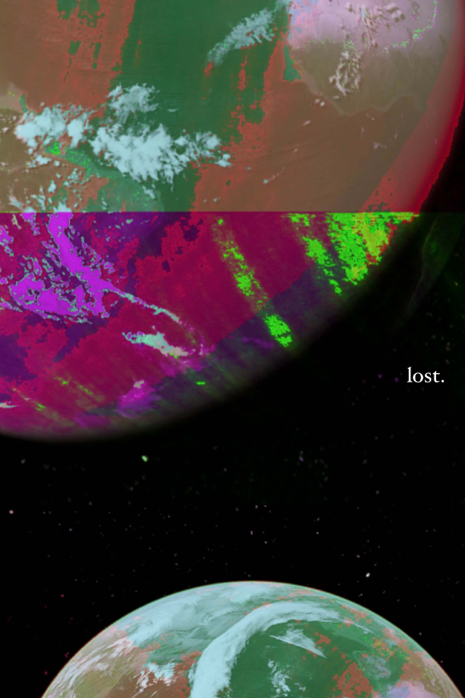
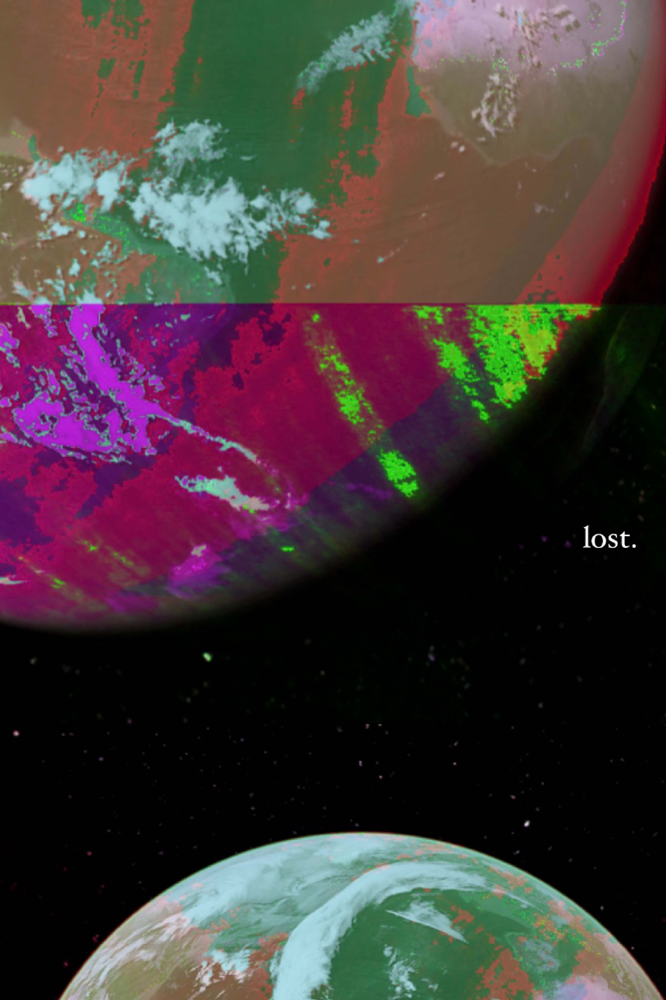
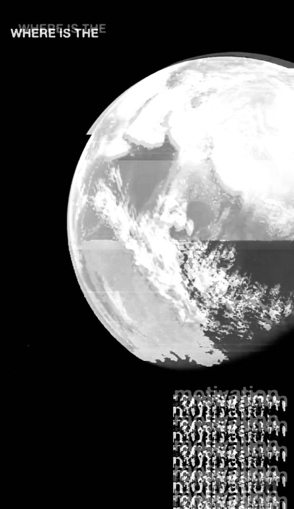
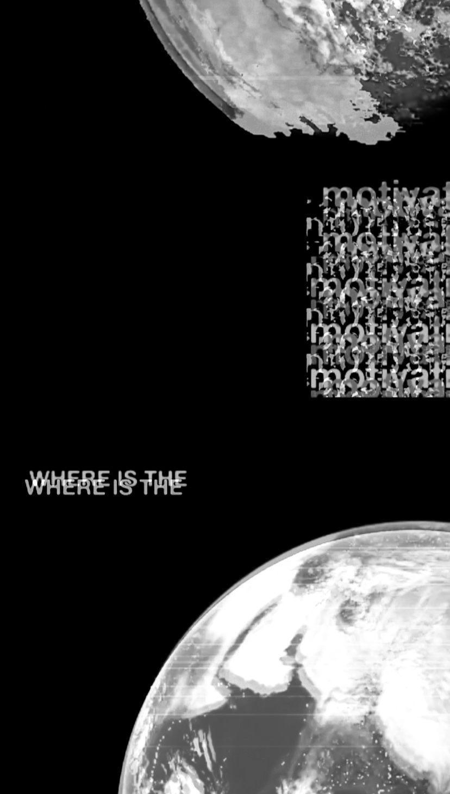
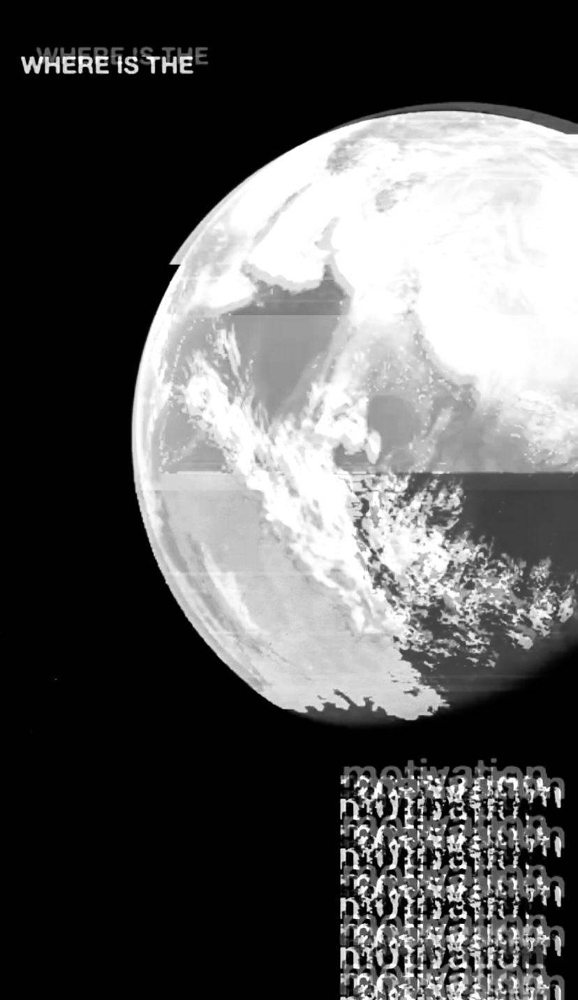
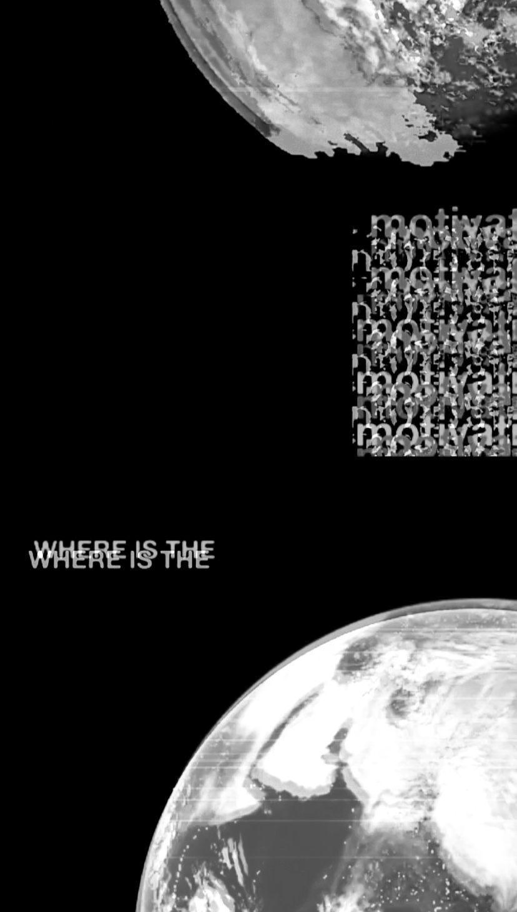

ASSIGNMENT I: Confunding Tools
Experiments
First Draft
Second Draft
Final


 


 





First experimentation of this project that was initially created based on the subject matter of many people in the world, including myself losing motivation for school or hobbies due to procrastinations from working in the same environment I spend my leisure time and feeling overall drained out due to COVID. Created using a screenshot of the Earth from Google Earth, and a screenshot of text from Google Slides which were both glitched on Audacity, and complied together on Instagram stories.
Second experimentation based on the subject matter of losing an on-campus experience as COVID caused school to go online and stay online since. Created using screenshots of Google Maps and Canvas complied on Instagram story with Instagram effects applied on top of it.
Third experimentation based on the subject matter of uncertainty and frustation because COVID has affected the entire world and no one knows when it will end due to continious lockdowns and variants.
Created using screenshots of the Earth from Google Earth, Calendar, COVID case chart, and news articles that were then complied on Instagram story with Instagram effects applied on top of it.
I continued this project with the same tools of Instagram story ad Audacity, and the subject matter of losing motivation, however it was altered to focus more on the feeling of isolation and how it ties in to losing motivation. I kept the negative black space aspect of the poster as it resembled space. Space is very isolating which is what many people in the world, including myself felt during COVID.
I changed the text and glitched the screenshot of Earth once again to get a different effect. The composition was also changed and an Instagram effect was applied.
This iteration is similar to my first experimentation but in black and white and composed to create more negative space as it emphasizes the feeling of isolation more. In the class critiques, this draft was favoured by myself and my peers so I further iterated with this design more.
Same composition and idea as the previous draft but this one was created using a different Instagram filter and the colours were then adjusted on iPhone’s photo editor. There is more of a blurry effect for this one, which I find to enhance the feeling of being lost and isolated during COVID. The text for “motiviation” was also changed to a sans-serif font to match the text “where is the”.
Using the same elements, I changed the composition for this one, giving more negative space. It also creates more of a focal point within the poster as it was mentioned in critiques that my peers found their eyes being drawn to the text “where is the” first. This one was favoured
within the final critique and it was suggested that I move the text “where is the” to the right more, add an accent colour, and make the “motivation” text less static/blocky by creating a more zig-zag text placement.
Coloured version but was not further iterated on as I found black and white to bring more unity and emphasize on the feeling of isolation.
The final draft of the poster.
I applied all the suggestions I recieved from the final critique and I liked the way it turned out. I shifted the position of the elements to make the composition have a better look, and applied the colour accents through layers of Instagram effects.